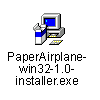
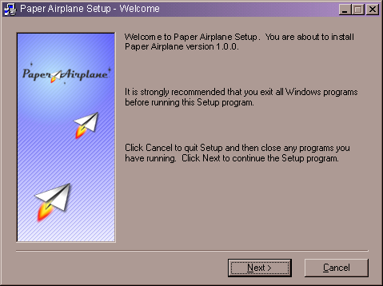
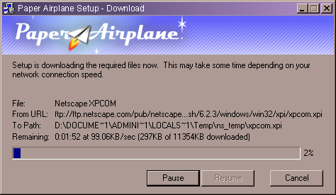

| | |
Table of Contents | Last | Next
Installation
To install Paper Airplane first download Paper Airplane from http://paperairplane.codinginparadise.org/download/.
Ensure that you are connected to the Internet before running the Paper Airplane installer.
Double-click the file titled PaperAirplane-win32-1.0-installer.exe:

Installer Icon
This will begin the installation process:

Install 1
After agreeing to the various open-source license agreements, choose which components of Paper Airplane you would like to download. You can choose which directory you would like to download these components into in order to expedite installation in the future or to perform installation without Internet access; if you have already downloaded the Paper Airplane portions before, press the Browse button to locate these on your hard-drive and look for a directory with files that end in .xpi.
Next, decide if you would like to enable the Quick Start functionality. If this is enabled, Paper Airplane will load a portion of itself into memory when you start your computer for faster startup times. It is recommended that you enable Quick Start. You can disable it in the future by right-clicking on the Paper Airplane icon in the Windows taskbar and choosing Disable Quick Launch.
Finally, Paper Airplane will begin downloading the rest of the application over the network.
